SNL Debugger is a tool to diagnose the running state programs and manage the PRR SNLEXEC. It can query the information of a running state program, e.g. list the state sets and variables (assigned and non-assigned), get and set the value of a variable, jump to any state of a state set, control the state set run mode: normal/suspended/single-step. It can also stop a running state program or start a new state program provided that the state program is compiled and loaded to the IOC.
The following figure is the interface of CSS SNL Debugger. The left part is a tree structure and right part shows the details related to the selected node.
Some genenral info are shown on the top of right side.
"Request Status" is the result of the request. It is SUCCESS if the request is successful, otherwise is FAILED.
"Driver Name" is RMT or PRR name.
"Driver Status" is related to the IOC state and Driver Name. It is MASTER or SLAVE when IOC is master or slave and Driver Name is RMT. It is active or inactive when IOC is master or slave and Driver Name is PRR name.
"Internal Status" shows the synchronization status of PRR at present.
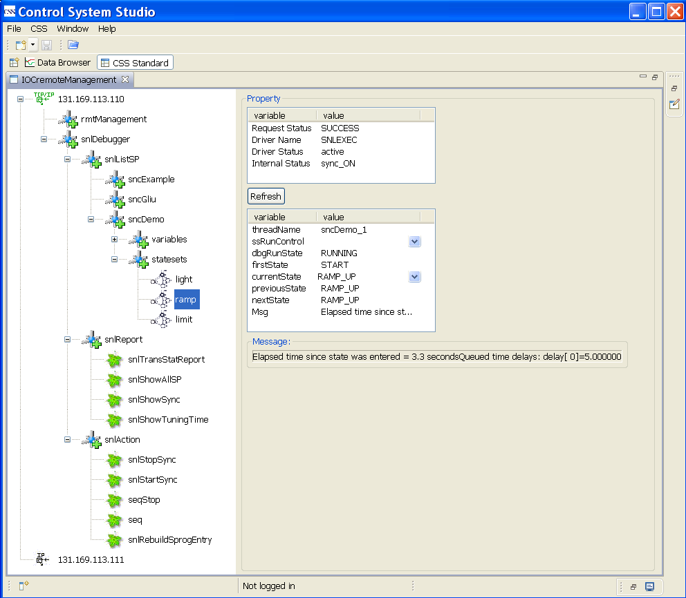
SNL Debugger is a part of IOCremoteManagement. IOCremoteManagement can be launched from CSS menu CSS->Diagnostic Tools->IOCremoteManagement. A list of IOC IP addresses is shown on the left of the interface at the beginning. IP addresses are configurable. Two IOC addresses are shown in the following figure and these two IOCs form a redundant IOC pair.

After clicking an IP address, two branches are shown: snlDebugger and rmtManagement. snlDebugger is for SNL Debugger; rmtManagement is for RMT management and is not discussed here.

After clicking snlDebugger, three sub-branches are shown: snlListSP, snlReport and snlAction. Each sub-branch has its own sub-branch or leaf. snlListSP is to list the running state programs. snlReport is a command collection to report the status related to SNLEXEC and the running state programs. snlAction is a command collection to control the behavior related to SNLEXEC and the running state programs. The details for each command will be described in other sections.

You can get a list of variables for a state program from the tree easily. The statistic info is shown on the right side of the interface. numVars is the variable number including assigned and non-assigned variable. numChans is the channel number. assignCount is the assigned variable number. connCount is the connected channel number.

There are three properties are shown for a non-assigned variable: assigned, type and value.
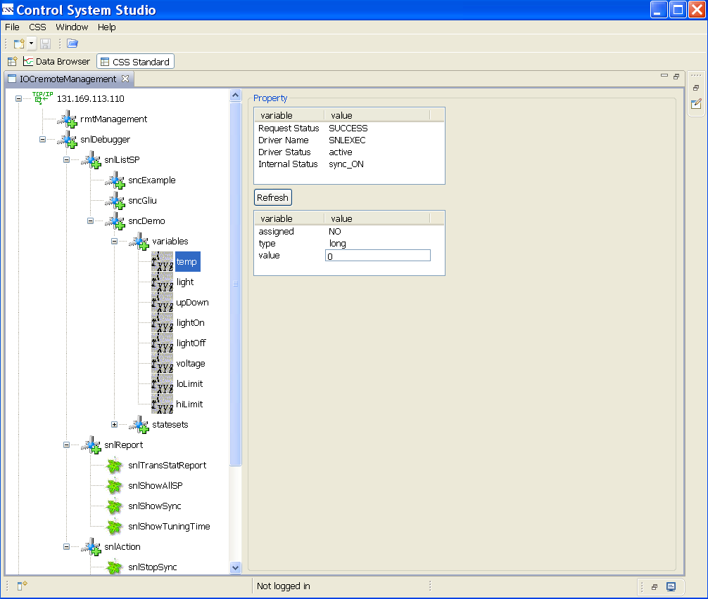
The value of the variable can be changed from the entry directly if the IOC is master, otherwise the warning messages will be given.
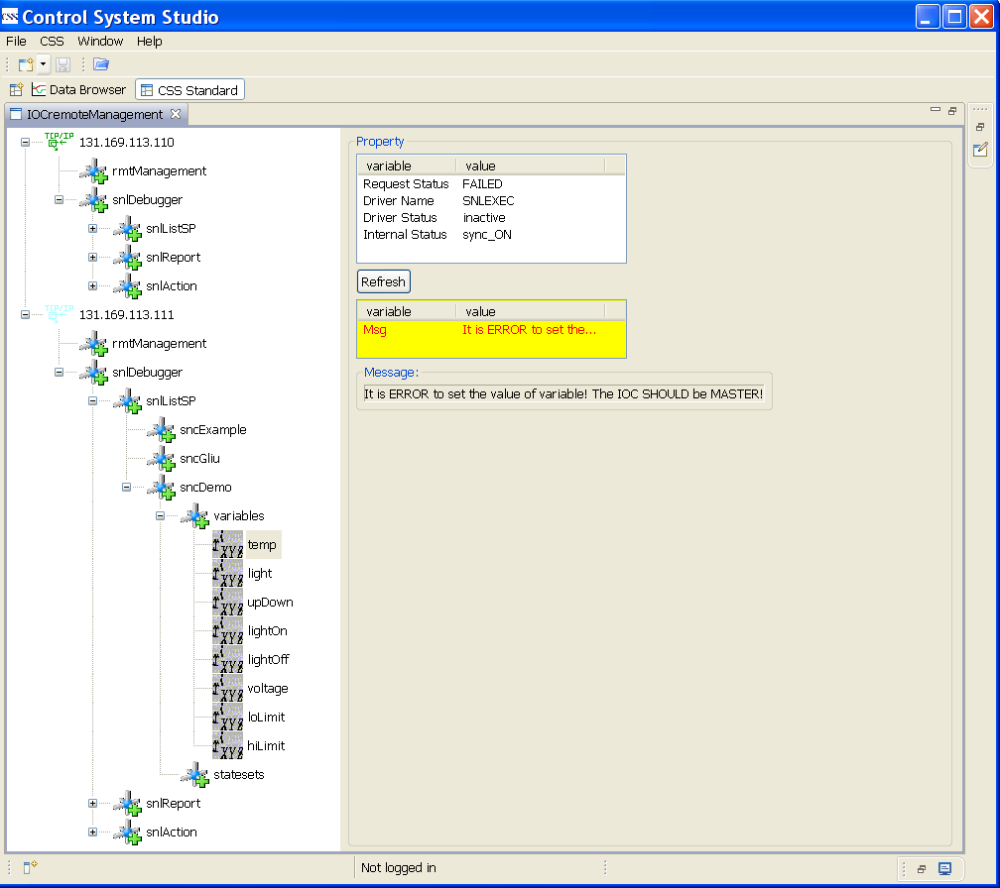
There is one more property is shown for an assigned variable: dbName.
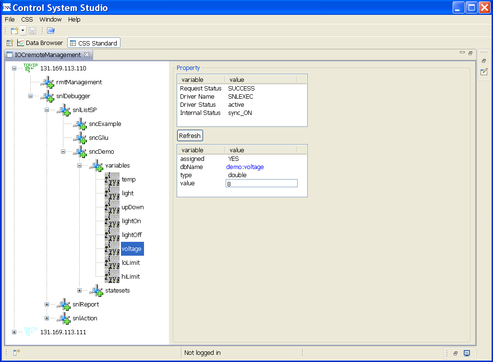
After selecting the record name, a pop-up menu can be arisen when you click the right button of mouse.
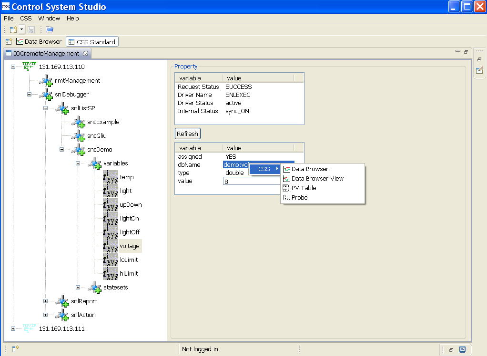
You can choose the CSS application Data Browser to show the history of the record.

There are eight properties are shown for a state set: threadName, ssRunControl, dbgRunState, firstState, currentState, previousState, nextState and Msg. There are pull-down menus for the properties ssRunControl and currentState.

You can jump to any state of the state set through selection from currentState's pull-down menu provided that the IOC is master and dbgRunState is RUNNING.
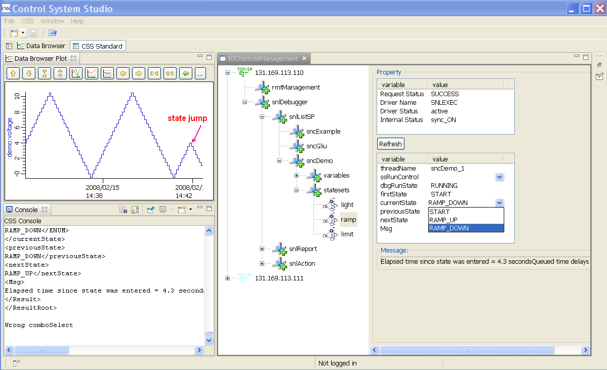
You can control the control the state set run mode through selection from ssRunControl's pull-down menu provided that the IOC is master. dbgRunState should be STOPPED for single-step mode.

There are four commands to report the status related to SNLEXEC and the running state programs: snlTransStatReport, snlShowAllSP, snlShowSync, snlShowTuningTime.
snlTransStatReport is to report the data transfer statistic form master IOC to slave IOC.
FullUpdateCount is the update number.
LastFullCycleTime is the total transfer time for the last update.
LastFullSendCount is the sent package count for the last update.
LastFullSendBytes is the total bytes for the last update.
The left properties are easy to understand.

snlShowAllSP is to show the thread id, thread name and state set name for all running state programs.
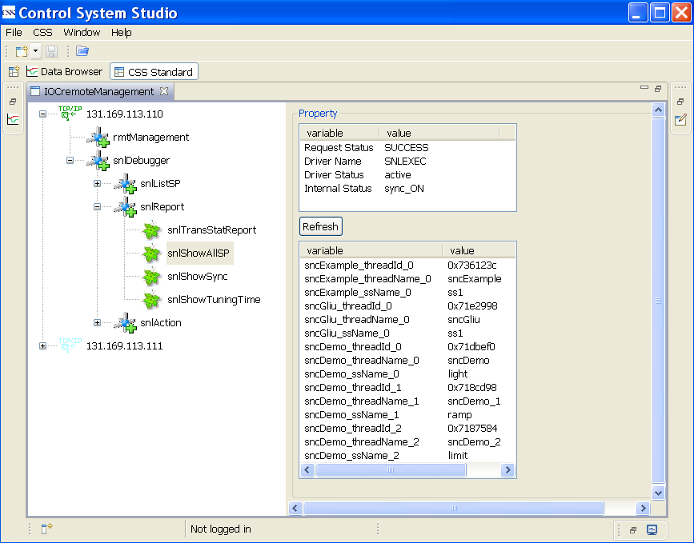
snlShowSync is to show the synchronization status. The synchronization is ON if snlsyncHold is FALSE, otherwise is OFF.

snlShowTuningTime is to show some tuning time settings.
snlUpdatePeriod is the update period, and it is set to 1.0 second at present.
The other time settings can be ignored by SNL Debugger users.

There are four commands to report the status related to SNLEXEC and the running state programs: snlStopSync, snlStartSync, seqStop, seq, snlRebuildSprogEntry.
snlStopSync is to stop the synchronization.

snlStartSync is to start the synchronization.

seqStop is to stop a running state program. The precondition is that the synchronization is stopped. You should click the button "call it" after inputting the thread id.
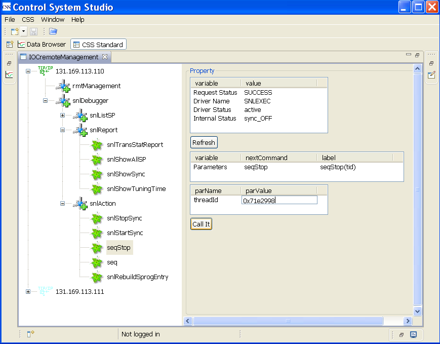
You can use the command snlShowAllSP to check the result. The thread id is related to state program sncGliu, and you can find that this state program is disappeared.
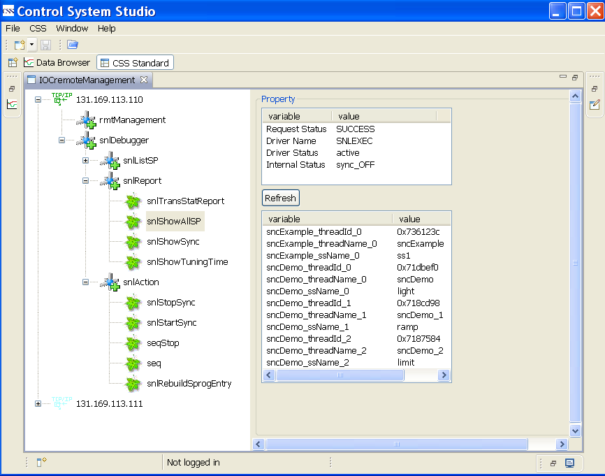
seq is to start a new state program. The preconditions are that the state program is compiled and loaded to the IOC, and the synchronization is stopped.
You should click the button "call it" after inputting the spName, macroStr and stackSize.
macroStr and stackSize are optional.
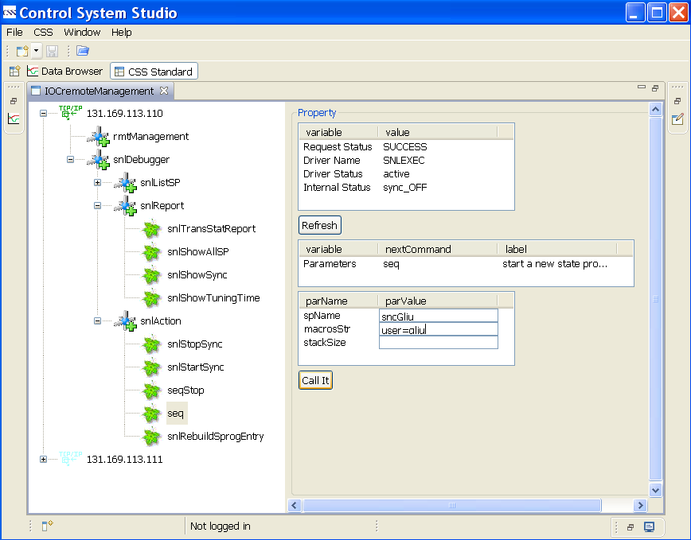
You can use the command snlShowAllSP to check the result similarly. The state program sncGliu is shown again.

snlRebuildSprogEntry is to rebuild the state program entry table. The precondition is that the synchronization is stopped.
Normally you need not use it.
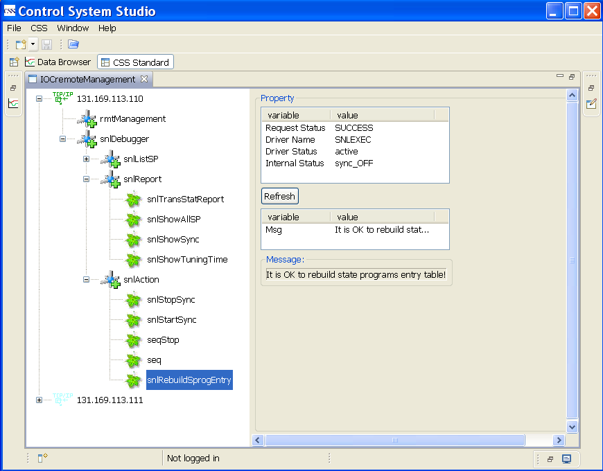